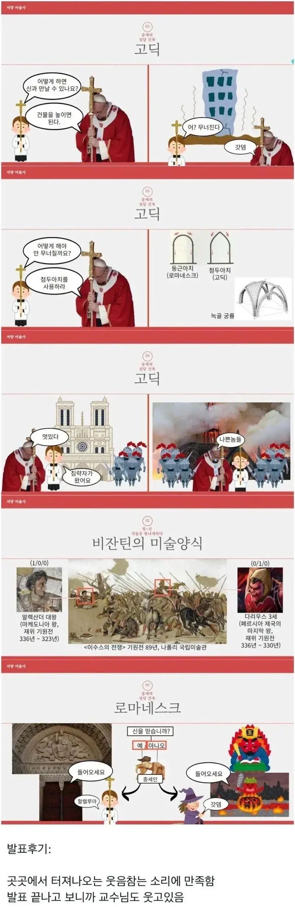

교수님 : 니가 꼬셨잖아

교수님 : 니가 꼬셨잖아
개인적 웃음포인트
1. 갓뎀
2. 다리우스 010
3. 나쁜놈들
이제 방과후에 시간있냐고 물어보겄네
갓뎀 ㅅㅂ ㅋㅋㅋ
다리우스 얼굴 뭔데ㅋㅋ
라인전 셀거같애
왓더헬리

원생아 너가 유혹한거다
ㅋㅋㅋㅋㅋㅋㅋㅋㅋ
할렐루야가 아니라 알렐루야
천주교 : 알렐루야, 개신교 : 할렐루야
그런데 미카엘이 미국식 발음으로 마이클이 되듯이 지역별 발음 차이니 어느쪽이든 문제 없지 않나?
중세시대임 저거
오랄좋지
다리우스 0/1/0 ㅋㅋㅋㅋㅋㅋ
평범한 3랩 다리우스잖아?ㅋㅋㅋㅋㅋㅋㅋ
3렙 다리우스는 3/0/0 아니면 0/1/0 이라는 전설이 있다.
뭐라도 할놈일세 ㅋㅋ
다리우스 씹것 ㅋㅋㅋ
나쁜놈들
저 갓뎀이 아무리봐도 킬포야